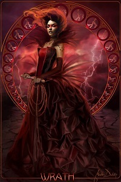

Гнев (Злость)

Гнев провоцирует тот образ мышления, который заставляет людей поддерживать убеждения, противоречащие их собственным. К тому же, гневные посредники чаще добиваются того, что хотят в переговорах.